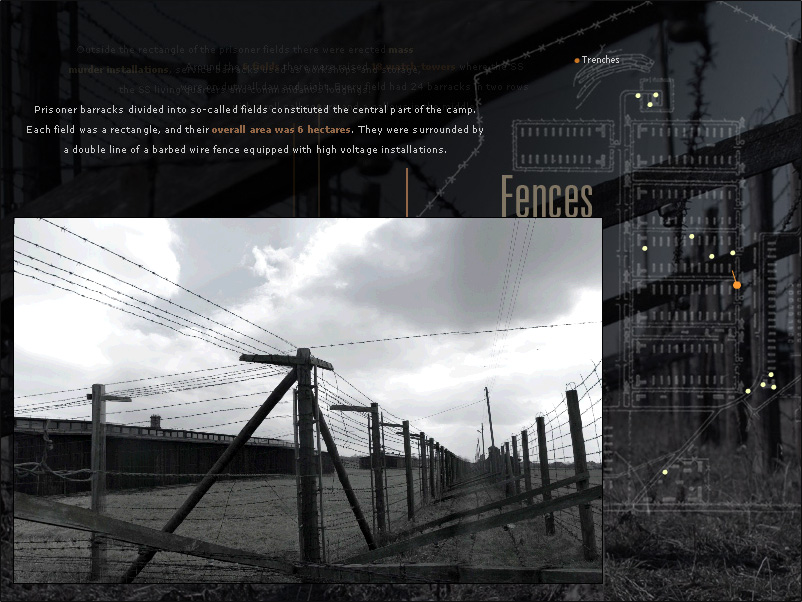
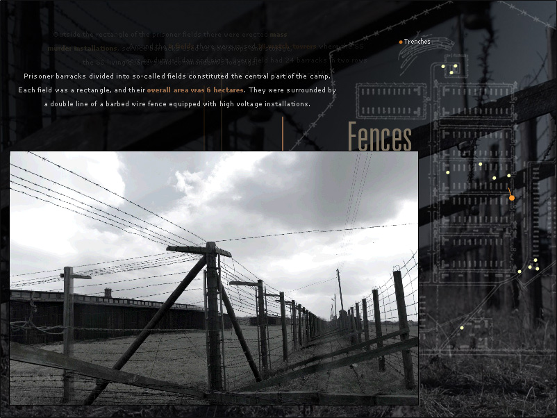
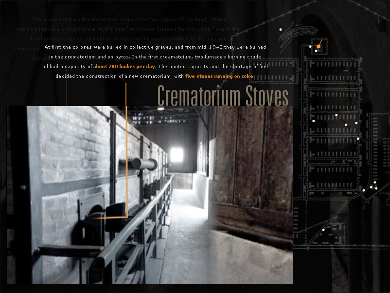
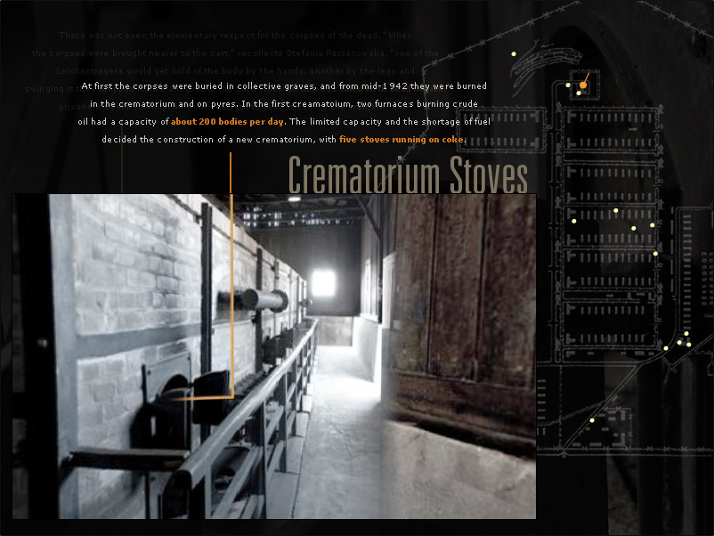
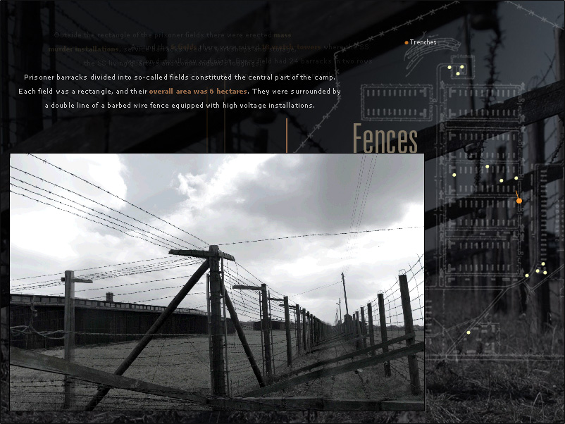
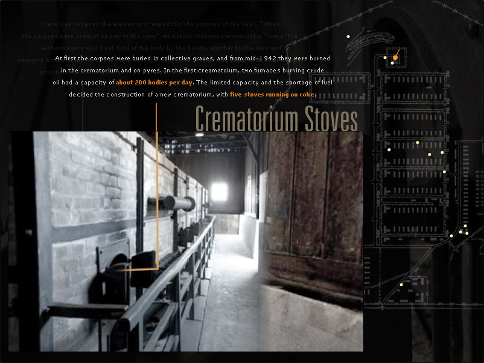

 

Skills: Photograhy, Director, Flash, Photoshop, VR Worx
As part of a college field trip, a group of design students teamed up with the Majdanek concentration camp museum staff in Lublin, Poland to create an immersive and interactive virtual tour of the camp that would serve as both an educational tool and an archive of the concentration camp as it appears today.
Working in teams of 3-6, we spent several days photographing the site, scanning documents, and becoming familiar with the history of the concentration camp. Due to the small size of the museum, many of the items in their possession could not be displayed. It was our hope that by documenting them, we could share them with a larger audience in a digital medium, where space was not an issue. We also served the important role of creating a record of parts of the concentration camp that were beginning to deteriorate due to age, accidents, and nature.
Using Apple’s Quicktime VR technology, our group created a virtual tour of the concentration camp within a Director environment that would potentially be used in a kiosk unit. The VR scenes themselves have graphical elements that relate to the larger interface, such as lines connecting typography and a camp map with direction pointer. The initial interface was created in English only, but was multi-language ready.
